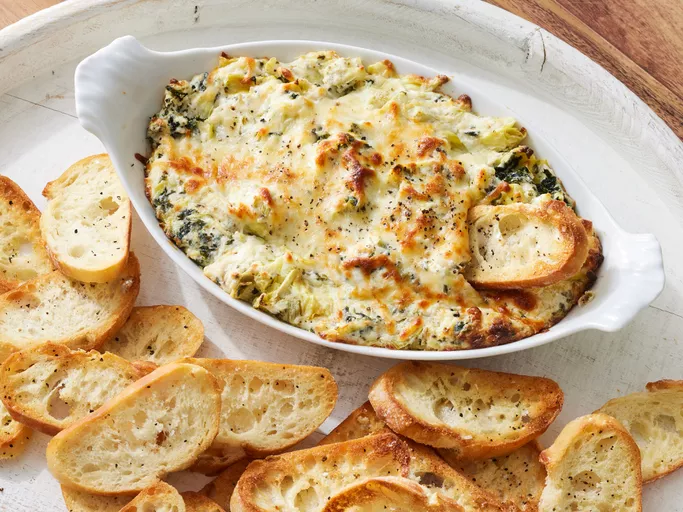

Hot Spinach Artichoke Dip

About the meal
This spinach artichoke dip is delicious. It's so cheesy and fragrant. If
you don't like artichokes, don't worry — you'll never know they're in
there! My only question is: Is it okay to eat it with a spoon right out of
the dish?
Spinach artichoke dip is the best (and most delicious) way to get any
party started. This crowd-pleasing spinach artichoke dip recipe is sure to
be a hit with your friends and family.
Ingredients
-
Cream cheese: 1 (8 ounce / 225 grams) package cream
cheese, softened
- Mayonnaise: ¼ cup mayonnaise
-
Cheeses:
- ¼ cup grated(25 grams) Parmesan cheese
- ¼ cup grated(25 grams) Romano cheese
- ¼ cup(25 grams) shredded mozzarella cheese
- Garlic: 1 clove garlic, peeled and minced
-
Spices and seadonings:
- ½ teaspoon dried basil
- ¼ teaspoon garlic salt
- salt and pepper to taste
-
Artichoke hearts: 1 (14 ounce / 395 grams) can
artichoke hearts, drained and chopped
-
Spinach: ½ (78 grams) cup frozen chopped spinach,
thawed and drained
Directions
Step by step directions:
-
Gather all ingredients. Preheat the oven to 350 degrees F (175 degrees
C). Lightly grease a small baking dish.
-
Mix cream cheese, mayonnaise, Parmesan cheese, Romano cheese, garlic,
basil, garlic salt, salt, salt, and pepper together in medium bowl.
- Gently stir in artichoke hearts and spinach.
-
Transfer the mixture to the prepared baking dish; top with mozzarella
cheese.
-
Bake in the preheated oven until bubbly and lightly browned, about 25
minutes.